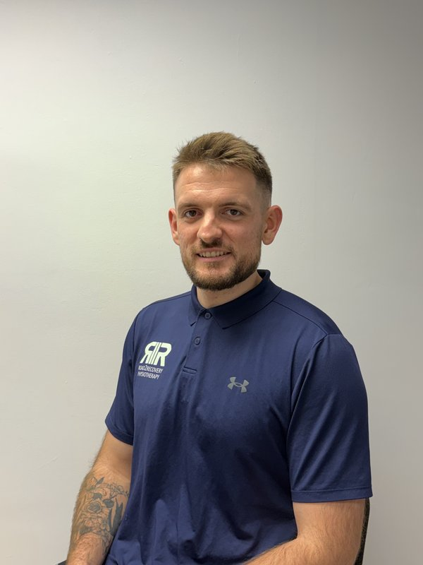

Home-Based Physiotherapy · North Essex
Expert Physio,
Delivered to Your Door
Professional, personalised physiotherapy in the comfort of your own home across Colchester, Braintree, Witham, Coggeshall and surrounding North Essex villages. Whether you're recovering from surgery, managing chronic pain, or improving mobility — I come to you.
HCPC Registered
CSP Member
Enhanced DBS
Fully Insured
BSc (Hons) Physiotherapy
500+
Patients Treated
4+
Years Experience
5.0★
Fresha Rating

Home Visits
Treatment at your door
5-Star Rated
Verified Fresha reviews